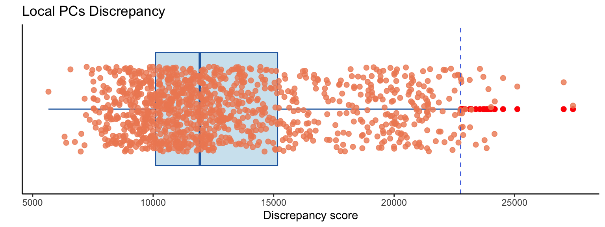

Chapter 4 Practical session 4
In this session we will have a hands-on exploration of GW-PCA and its application to STx data. What can we learn from this novel technique?
4.1 Geographically Weighted Principal Components Analysis (GWPCA)
A standard PCA can pick out the key multivariate modes of variability in the data. Looking at outlying values of the principal components of these data gives us an idea of unusual sites (in terms of combinations of gene expression profiles -and to a certain extend of combinations of cell types in each spot). Next, Geographically weighted PCA can be used to find spatial multivariate outliers. Sounds complicated, but really all this means is it identifies sites that have an unusual multi-way combination of gene expression in relation to their immediate geographical neighbours. It might be that the values observed at these sites as a combination is not uncommon in the tissue as a whole - but is very unusual in its locality.
To find such outliers the procedure is relatively simple - instead of doing a PCA on the tissue as a whole, for each sample we do a PCA on data falling into a window centred on the location of that spot. In that way we can check whether the spot is like its neighbours or not, from a multivariate viewpoint.
The following code carries out a geographically weighted PCA. In short, it runs a ‘windowed’ PCA around each of the spots.
4.4 Parameter prearation for GWPCA
Because gwpca uses princomp to run the PCAs and this does not accept the number of variables (genes) being more than the number of samples (spots).
## Get the gene names that are going to be evaluated
vars = top_hvgs
## Set a fixed bandwidth
bw = 6*sfe@metadata[["spotDiameter"]][["JBO019"]][["spot_diameter_fullres"]]
## Set the number of components to be retained
k = 20
## Set the kernel to be used
kernel = "gaussian"
## Set the Minkowski distance power: p = 2 --> Euclidean
p = 2
## Is the bandwidth adaptive?: No because spots are fixed
adaptive = FALSE
## Cross-Validate GWPCA?
cv = TRUE
## Calculate PCA scores?
scores = FALSE
## Run a robust GWPCA?
robust = FALSE
## Make a cluster for parallel computing (otherwise GWPCA is slow!)
my.cl <- parallel::makeCluster(parallelly::availableCores() - 1, type = 'FORK')The bandwidth is essentially the radius around each spot where every other spot that falls inside it is considered a neighbour. We can set bandwidth as a fixed value or we can select the bandwidth automatically. Without going into detail here, this is achieved by a form of cross validation, where each observation is omitted, and it is attempted to reconstruct the values on the basis of principal components, derived from the other observations. The bandwidth achieving the optimal results is the one selected. For a complete explanation, see Harris, Brunsdon, and Charlton (2011). The function bw.gwpca computes this:
- NOTE: Larger bandwidths imply bigger moving spatial windows, which in turn imply smoother spatially varying outputs.
4.5 Run GWPCA
Run the optimised GWPCA with the automatically estimated bandwidth:
# DO NOT RUN THIS CHUNK
# >>> it returns an error when inside the markdown. Maybe run with verbose = FALSE
pcagw <- gwpcaSTE(sfe = sfe,
assay = "logcounts",
vars = vars,
p = p,
k = k,
bw = bw,
kernel = kernel,
adaptive = adaptive,
scores = scores,
robust = robust,
cv = cv,
future = FALSE,
strategy = "cluster",
workers = my.cl,
verbose = FALSE)
saveRDS(pcagw, file = "./data/to_load/practical04_pcagw.rds")Because GWPCA can take some time to run, we ran it for you and below you can load the output:
4.6 Plot global PCA results
In the next steps we will be looking inside the output from gwpca function and we are going to extract some basic information. Since GWPCA is multiple local PCAs, it is good to know how many PCs makes sense to look at. We can do so by running a global PCA and plotting a scree plot:
plotGWPCA_global(gwpca = pcagw,
comps = 1:10,
type = "scree",
point_args = list(size = 3, colour = "red"),
line_args = list(linewidth = 1, colour = "dodgerblue"))In a Principal Component Analysis (PCA), the first three principal components may explain less than 15% of the variance in the data if the data is highly dispersed or if there is a large amount of noise in the data. This means that the first three principal components are not capturing a significant portion of the variability in the data. This could be due to a lack of clear structure in the data or a lack of meaningful patterns that can be captured by the PCA. Alternatively, it could be due to the presence of many irrelevant features or variables in the data that are not contributing to the overall variance. This is one more of the reasons why GWPCA is more appropriate for STx data. Because, it may be true that the global PCs are not strong but locally this can change.
4.7 Identify the leading genes in each location
## Extract leading genes
pcagw <- gwpca_LeadingGene(gwpca = pcagw,
sfe = sfe,
pc_nos = 1:4,
type = "single",
names = "gene_names")## 16 leading genes found for PC1
## The leading genes in PC1 are:
## ADH1A C7 CRP CYP3A4 GLUL GSTA2 HAMP HBA2
## 2 11 4 365 7 1 13 33
## IGLL5 MALAT1 MTRNR2L12 MTRNR2L8 NNMT PTGDS SAA1 SDS
## 87 39 153 181 23 73 36 133
## 21 leading genes found for PC2
## The leading genes in PC2 are:
## C7 CAT CFHR1 CRP CYP3A4 GLUL HBA2 HBB
## 3 6 38 39 149 83 2 37
## IGFBP3 IGFBP7 IGJ IGLL5 MALAT1 MTRNR2L10 MTRNR2L12 MTRNR2L8
## 49 39 34 246 80 10 78 124
## NNMT SAA1 SDS TAGLN UGT2B7
## 42 12 69 20 1
## 24 leading genes found for PC3
## The leading genes in PC3 are:
## AEBP1 C7 CAT CFHR1 CRP CYP3A4 GLUL HBA2
## 2 2 27 20 5 20 17 27
## HBB IGFBP3 IGFBP7 IGJ IGLL5 MALAT1 MTRNR2L10 MTRNR2L12
## 150 41 77 6 399 136 6 61
## MTRNR2L8 MYL9 NNMT SAA1 SCGB3A1 SDS TAGLN UGT2B7
## 25 9 24 6 56 15 26 4
## 25 leading genes found for PC4
## The leading genes in PC4 are:
## AEBP1 CAT CFHR1 CRP FXYD2 GLUL GSTA2 HBA2
## 1 53 15 7 7 33 3 2
## HBB IGFBP3 IGFBP7 IGJ IGLL5 MALAT1 MTRNR2L10 MTRNR2L12
## 181 100 51 60 281 201 5 16
## MTRNR2L8 MYL9 NNMT ORM2 SAA1 SDS SPINK1 TAGLN
## 16 5 55 6 6 37 12 4
## UGT2B7
## 4pcagw <- gwpca_LeadingGene(gwpca = pcagw,
sfe = sfe,
pc_nos = 1:4,
genes_n = 4,
type = "multi",
method = "membership",
names = "gene_names")## The number of individual leading genes groups found for PC1 is: 110
## These groups are: Too many to print them!
## The number of individual leading genes groups found for PC2 is: 240
## These groups are: Too many to print them!
## The number of individual leading genes groups found for PC3 is: 310
## These groups are: Too many to print them!
## The number of individual leading genes groups found for PC4 is: 421
## These groups are: Too many to print them!4.8 Percentage of Total Variation (PTV)
Another useful diagnostic for PCA is the percentage of variability in the data explained by each of the components. This can be achieved by looking at the var component of pcagw; this is written as pcagw$var. This is an XXXX by XX matrix - where XXXX is the number of observations and XX is the number of components. For each location, the XX columns correspond to the variance of each of the principal components. Looking at the proportion of each component in the sum of all of the variances shows how much of the variability in the data each component contributes. If, say, the first two components contributed 90% of the total variance, then it is reasonable to assume that much of the variability in the data can be seen by just looking at these two components. Because this is geographically weighted PCA, however, this quantity varies across the map.
## Calculate the PTV for multiple Components
pcagw <- gwpca_PropVar(gwpca = pcagw, n_comp = 2:10, sfe = sfe)## Comps_01 Comps_02 Comps_03 Comps_04
## Min. : 6.279 Min. :11.67 Min. :16.43 Min. :20.69
## 1st Qu.: 9.483 1st Qu.:16.13 1st Qu.:21.24 1st Qu.:25.69
## Median :16.782 Median :25.54 Median :30.37 Median :34.46
## Mean :17.370 Mean :25.92 Mean :31.35 Mean :35.49
## 3rd Qu.:22.534 3rd Qu.:32.87 3rd Qu.:39.42 3rd Qu.:43.81
## Max. :38.254 Max. :46.50 Max. :54.25 Max. :57.51
## Comps_05 Comps_06 Comps_07 Comps_08
## Min. :24.64 Min. :28.28 Min. :31.49 Min. :34.26
## 1st Qu.:29.65 1st Qu.:33.13 1st Qu.:36.54 1st Qu.:39.53
## Median :37.79 Median :40.86 Median :43.53 Median :46.17
## Mean :38.98 Mean :42.07 Mean :44.84 Mean :47.38
## 3rd Qu.:47.17 3rd Qu.:49.78 3rd Qu.:52.16 3rd Qu.:54.19
## Max. :60.60 Max. :62.97 Max. :65.04 Max. :67.03
## Comps_09 Comps_10
## Min. :36.76 Min. :39.15
## 1st Qu.:42.34 1st Qu.:45.05
## Median :48.60 Median :50.96
## Mean :49.73 Mean :51.91
## 3rd Qu.:56.07 3rd Qu.:57.77
## Max. :68.83 Max. :70.394.9 Identify discrepancies
Global PCA can be used to identify multivariate outliers. Extending this, it is also possible to use local PCA (i.e., GWPCA) to identify local outliers. One way of doing this links back to the cross-validation idea used earlier to select a bandwidth. Recall that this is based on a score of how well each observation can be reconstructed on the basis of local PCs. The score measures the total discrepancies of true data values from the reconstructed ones - and the bandwidth chosen is the one minimising this. However, the total discrepancy score is the sum of the individual discrepancies. A very large individual discrepancy associated with an observation suggests it is very different - in a multidimensional way, to the observations near to it. These discrepancies can be calculated with the gwpca.cv.contrib function.

Comment on the discrepancies and the Liver histopathology
## Get location data for the discrepancies
discrepancy_loc_dt <- getDiscrepancyLocData(sfe = sfe,
gwpca = pcagw,
sample_id = "JBO019")Another possibility to understand the nature of the outlier is a parallel coordinates heatmap. Here, each observation neighbouring the location that has been found to be an outlier is shown as a column with the genes in rows. Since here we are investigating local outliers, one particular observation is highlighted in red -the outlier-, and the remaining ones in grey, but with the intensity of the grey fading according to their distance from the red observation. This enables you to see what characteristic the red observation has that means it as outlying from its neighbours. The plot can be created using gw.pcplot:
## barcodes coords.pxl_col_in_fullres
## AAGTGCCTTGACTGTA-1 AAGTGCCTTGACTGTA-1 11086
## ACCCGGATGACGCATC-1 ACCCGGATGACGCATC-1 9908
## ACCTCCGTTATTCACC-1 ACCTCCGTTATTCACC-1 9113
## AGATGATGGAGTCTGG-1 AGATGATGGAGTCTGG-1 9117
## AGGTATAATTGATAGT-1 AGGTATAATTGATAGT-1 9312
## AGTGAACAAACTTCTC-1 AGTGAACAAACTTCTC-1 11088
## coords.pxl_row_in_fullres discScore
## AAGTGCCTTGACTGTA-1 5148 22793.56
## ACCCGGATGACGCATC-1 5607 24165.26
## ACCTCCGTTATTCACC-1 4255 27035.77
## AGATGATGGAGTCTGG-1 4933 27423.00
## AGGTATAATTGATAGT-1 4593 23839.25
## AGTGAACAAACTTCTC-1 5374 25111.79
## geometry
## AAGTGCCTTGACTGTA-1 POLYGON ((11020.03 5034.788...
## ACCCGGATGACGCATC-1 POLYGON ((9841.741 5494.291...
## ACCTCCGTTATTCACC-1 POLYGON ((9046.741 4142.291...
## AGATGATGGAGTCTGG-1 POLYGON ((9050.741 4820.291...
## AGGTATAATTGATAGT-1 POLYGON ((9245.076 4480.294...
## AGTGAACAAACTTCTC-1 POLYGON ((11020.91 5261.585...focus <- discrepancy_loc_dt$barcodes[1:2]
bw = 3*sfe@metadata[["spotDiameter"]][["JBO019"]][["spot_diameter_fullres"]]
# Plot the heatmap to visualise the genes that make this location an outlier
plotGWPCA_discrHeatmap(sfe = sfe,
assay = "logcounts",
vars = NULL,
focus = focus,
dMetric = "euclidean",
sample_id = "JBO019",
bw = bw,
mean.diff = 1,
show.vars = "top",
scale = "row",
gene.names = TRUE,
color = rev(colorRampPalette(brewer.pal(11, "RdBu"))(1000)))discrepancy_gene_dt <- getDiscrepancyGeneData(sfe = sfe,
assay = "logcounts",
vars = NULL,
focus = focus[2],
dMetric = "euclidean",
sample_id = "JBO019",
bw = bw,
mean.diff = 1,
show.vars = "top",
exportExpression = TRUE)
head(discrepancy_gene_dt)## AACCCTACTGTCAATA-1 ACATGGCGCCAAAGTA-1 ACCCGGATGACGCATC-1
## ENSG00000078808 1.9800764 1.7845077 0.000000
## ENSG00000157916 1.1230410 2.3434121 0.000000
## ENSG00000171603 0.6681445 0.8599719 1.667949
## ENSG00000162496 1.1230410 0.8599719 0.000000
## ENSG00000074964 1.4683664 0.0000000 1.964768
## ENSG00000158828 1.1230410 0.8599719 0.000000
## ACGATCATCTTGTAAA-1 AGGGTCGATGCGAACT-1 ATAGTTCCACCCACTC-1
## ENSG00000078808 1.434549 0.0000000 0.0000000
## ENSG00000157916 1.094451 1.1491034 0.7197148
## ENSG00000171603 0.000000 0.0000000 0.0000000
## ENSG00000162496 1.094451 2.2182483 1.5560955
## ENSG00000074964 1.709571 0.6860569 0.7197148
## ENSG00000158828 1.434549 2.0159260 1.1976848
## ATATCAACCTACAGAG-1 CATCTTACACCACCTC-1 CCATCTCACCAGTGAA-1
## ENSG00000078808 1.848204 2.383137 0.7918769
## ENSG00000157916 1.356318 1.489110 2.2192853
## ENSG00000171603 0.000000 0.000000 1.3002121
## ENSG00000162496 2.214350 0.000000 2.2192853
## ENSG00000074964 1.028715 1.140629 0.7918769
## ENSG00000158828 2.632509 1.140629 0.7918769
## CCGATCTCAACCTTAT-1 CGCACGTGCGCTATCA-1 CGCTAGAGACCGCTGC-1
## ENSG00000078808 1.1456336 2.0109592 1.070644
## ENSG00000157916 1.7760473 2.4713829 1.070644
## ENSG00000171603 0.0000000 0.0000000 0.000000
## ENSG00000162496 0.6836662 1.7105588 1.678406
## ENSG00000074964 1.1456336 0.8136275 1.070644
## ENSG00000158828 0.6836662 1.3307021 1.070644
## CTAGGTCTGAAGGAAT-1 GAAAGAACAGCGTTAT-1 GCAGACCCAGCACGTA-1
## ENSG00000078808 1.1275395 2.0533150 2.1052992
## ENSG00000157916 0.0000000 1.5312450 0.8684635
## ENSG00000171603 0.6712291 0.7049757 0.0000000
## ENSG00000162496 1.1275395 2.5947724 1.4067734
## ENSG00000074964 1.4736763 1.5312450 1.4067734
## ENSG00000158828 1.1275395 1.5312450 0.8684635
## GCGCAAGAGCGCGCTG-1 GCTCGCTCATGTCCAA-1 GCTGTTGCTACCGAAC-1
## ENSG00000078808 2.505794 1.4756527 2.004239
## ENSG00000157916 1.117631 1.8764253 1.588731
## ENSG00000171603 0.000000 0.0000000 1.325320
## ENSG00000162496 2.173035 2.1897262 1.588731
## ENSG00000074964 0.000000 0.9188039 1.002827
## ENSG00000158828 1.739765 0.9188039 1.811392
## GGTTCTACTCGTCTGA-1 GTGCGACAGGGAGTGT-1 TAGACTACCTAGCGTT-1
## ENSG00000078808 1.7977169 1.633005 1.421361
## ENSG00000157916 1.4066078 1.633005 0.000000
## ENSG00000171603 0.8683433 0.000000 0.000000
## ENSG00000162496 2.3583475 1.263669 2.123256
## ENSG00000074964 0.8683433 2.170771 0.000000
## ENSG00000158828 1.4066078 1.633005 1.695032
## TAGGGAGCTTGGGATG-1 TATAGATGGTCGCAGT-1 TATATCCCTGGGAGGA-1
## ENSG00000078808 2.2316954 0.0000000 0.7102708
## ENSG00000157916 0.7985659 1.9335702 2.6061791
## ENSG00000171603 0.0000000 0.0000000 0.0000000
## ENSG00000162496 0.7985659 1.9335702 1.1841040
## ENSG00000074964 0.7985659 0.9560551 0.7102708
## ENSG00000158828 0.0000000 1.5260667 1.1841040
## TATTACCATCCTGCTT-1 TCATTTAAGTCTCCGA-1 TCTGGGAACCTTTGAA-1
## ENSG00000078808 1.9382158 2.1150669 2.3926955
## ENSG00000157916 1.0928336 1.2220876 1.4967274
## ENSG00000171603 0.6475105 0.0000000 0.6846746
## ENSG00000162496 2.4677235 1.5846069 2.0131754
## ENSG00000074964 0.6475105 1.2220876 0.6846746
## ENSG00000158828 1.0928336 0.7367522 1.4967274
## TGACATCGAGCGGACC-1 TGACGATGCACTAGAA-1 TTGAATTCACGTGAGG-1
## ENSG00000078808 1.9076262 2.4843308 1.8133018
## ENSG00000157916 1.2485083 1.3402294 2.0507006
## ENSG00000171603 0.7552962 1.0152672 0.0000000
## ENSG00000162496 2.7012885 1.3402294 2.0507006
## ENSG00000074964 1.2485083 0.5951586 0.7036449
## ENSG00000158828 1.6153854 0.0000000 1.1745524
## TTGACGCTCCATGAGC-1 gene_name
## ENSG00000078808 2.296259 SDF4
## ENSG00000157916 1.851153 RER1
## ENSG00000171603 0.000000 CLSTN1
## ENSG00000162496 1.851153 DHRS3
## ENSG00000074964 0.000000 ARHGEF10L
## ENSG00000158828 1.851153 PINK1